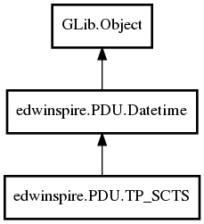

TP_SCTS
Object Hierarchy:

Description:
public class TP_SCTS :
Datetime
Namespace: edwinspire.PDU
Package: libspire_gsm
Content:
Properties:
- public
string Octets { set; get; }
Creation methods:
- public TP_SCTS (
TimeZone tz, int year, int month, int day, int hour, int minute, double seconds)
- public TP_SCTS.from_octets (
string octets)
- public TP_SCTS.from_values (
int year, int month, int day, int hour = 0, int minute = 0, double seconds = 0, int gmt = 0)
- public TP_SCTS.now_local ()
Methods: